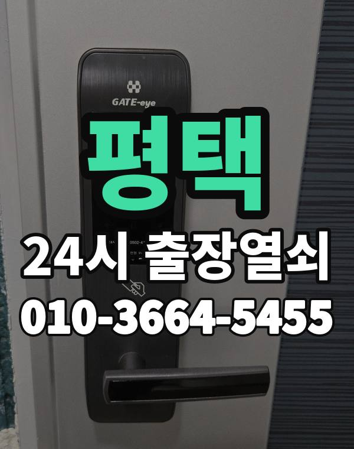

평택 출장 다니며 보는 동네
평택은 고덕 신도시 아파트와 비전동, 송탄 상가, 안중, 포승 쪽까지 남북으로 넓은 곳입니다.
송탄 쪽은 외국인 거주 원룸과 상가가 많은 편입니다.

평택시 출장 가는 동네
- 비전동
- 세교동
- 동삭동
- 고덕동
- 서정동
- 지산동
- 송탄동
- 안중읍
- 포승읍
- 팽성읍
- 청북읍
비전동 출장열쇠, 세교동 열쇠집처럼 동네 이름으로 찾으셨어도 같은 곳입니다.
적혀 있지 않은 동네도 평택시 안이면 다 갑니다.
평택에서 하는 일
평택 출장 부르실 때
동네 간 거리가 있어 위치를 먼저 받고 도착 시간을 말씀드립니다.
거주 확인만 되면 외국인 세대도 같은 방식으로 진행합니다.
평택역, 송탄역, 지제역, 서정리역 근처라고 말씀해 주셔도 위치 잡기가 쉬워집니다.
가까운 역이나 큰 건물, 단지 이름을 같이 알려주세요.
- 정확한 주소, 아파트라면 동과 호수
- 번호판 상태 (꺼짐, 켜짐, 경고음)
- 거주 확인용 신분증이나 주소 나온 우편물
전화부터 작업까지 순서는 이용안내에 적어 두었습니다.
평택 출장열쇠 관련 글
- 평택 안중읍 문 열고 난 뒤 도어락 점검과 같은 일 다시 안 생기게 하는 체크리스트
- 평택 안중읍 미용실 네일숍 유리문 잠금장치 고장과 문 잠김 대처
- 평택 안중읍 도어락 카드키 태그 추가 등록과 초기화 요령 정리
- 평택 안중읍 소규모 병원 의원 출입문이 잠겼을 때 대처와 점검
- 평택 안중읍 한파에 도어락이 느리거나 꺼질 때 배터리 점검과 출장열쇠 부르는 시점
- 평택 안중읍 부모님 집 도어락 점검, 고령자가 쓰기 편한 설정 알아보기
- 평택 안중읍 헤어진 사람이 가진 열쇠와 비밀번호가 걱정될 때 할 일
- 평택 안중읍 비상시 현관문 안쪽에서 열리는지 점검하는 법, 출장열쇠 안내
- 평택 안중읍 손주가 자주 오는 집 도어락 간단한 번호 정하기
- 평택 안중읍 명절이나 긴 여행 다녀온 날 현관문이 안 열릴 때 대처법
- 평택 안중읍 장마철·겨울 결로로 도어락이 오작동할 때 대처법
- 평택 안중읍 안쪽 열쇠가 꽂힌 채 잠긴 현관문, 열쇠가 안 들어갈 때 대처법
- 평택 안중읍 도어락 경고음과 모터 소리만 날 때 확인하는 순서
- 평택 안중읍 이사 후 도어락 비밀번호 초기화·재설정 이렇게 하세요
- 평택 안중읍 인테리어 리모델링 중 현관 도어락 보호하고 임시로 쓰는 법
- 평택 안중읍 옥상 출입문 잠금과 열쇠 보관, 문이 안 열릴 때 확인할 것
- 평택 안중읍 어르신이 쓰기 편한 도어락 번호판 사용법과 소리 설정
- 평택 안중읍 도어락 걸쇠 폭과 백셋 확인하는 법, 교체 전에 재 보세요
- 평택 안중읍 도어락 예비 건전지 어디에 둘까, 보관 위치 정하기와 출장열쇠
- 평택 비전동 도어락 배터리 방전 번호판이 꺼졌을 때 대처법
- 평택 비전동 출장열쇠 부르기 전 사진·위치·문 상태 이렇게 준비하세요
- 평택 비전동 현관문 아래가 바닥에 쓸릴 때 원인과 점검 순서
- 평택 비전동 차 안에 열쇠를 두고 내렸을 때 현관문 출장열쇠 대응법
- 평택 비전동 집주인 마스터 번호 쓸 때 주의할 점과 출장열쇠 상담
- 평택 비전동 여행지에서 집 열쇠를 잃어버린 가족이 알아둘 것
- 평택 비전동 우편함·사물함 열쇠 잃어버렸을 때 열쇠집 부르는 방법
- 평택 비전동 얇은 문 두꺼운 문에 맞는 도어락 고르는 법 설치 전 확인
- 평택 비전동 비파손 개방이란 무엇인지 문을 부수지 않고 여는 출장열쇠 방식
- 평택 비전동 원룸·오피스텔 출입문이 잠겼을 때 출장열쇠 부르는 순서
- 평택 비전동 현관 도어 아이와 초인종 카메라가 이상할 때 점검하는 순서
- 평택 비전동 정전이나 전기 점검 때 도어락은 어떻게 될까, 문 앞에서 당황하지 않는 법
- 평택 비전동 비 오는 밤 문이 안 열려 출장 요청할 때 알려두면 좋은 것
- 평택 비전동 자취방·고시원·쉐어하우스 출입문 안 열릴 때 출장열쇠 부르는 순서
- 평택 비전동 호기심 많은 유아가 도어락 번호판을 누르는 집 대처법
- 평택 비전동 분리수거장·쓰레기실 문 열쇠를 잃어버렸을 때 대처법
- 평택 비전동 빌라 다세대 현관문과 공동 출입문이 잠겼을 때 대처법
- 평택 비전동 와이파이 연동 도어락이 오프라인으로 뜰 때 확인 순서
- 평택 청북읍 카드키·태그·리모컨을 잃어버렸을 때 출장열쇠 부르기 전에
- 평택 청북읍 신입생 자취방 첫 도어락, 처음 쓰는 사람이 알아둘 것
- 평택 청북읍 복도식·계단식 아파트 현관문, 구조에 따라 달라지는 문 고장
- 평택 청북읍 오래 쓴 실린더가 닳아 열쇠가 헛돌 때 대처법
- 평택 청북읍 택배 받으러 나왔다가 문이 잠겼을 때 출장열쇠 부르는 순서
- 평택 청북읍 전기 걸쇠 출입문이 안 풀릴 때 확인 순서와 출장열쇠
- 평택 청북읍 지문 인식 안 될 때 도어락 확인 순서와 출장열쇠 이용법
- 평택 청북읍 도어락 비밀번호가 기억나지 않거나 가족이 바꿔 놓았을 때
- 평택 청북읍 도어락 건전지 알카라인과 리튬 중 어떤 걸 고를까
- 평택 청북읍 우편함 사물함 열쇠를 잃었거나 안 열릴 때 방법
- 평택 청북읍 연초와 분기마다 하는 도어락 점검 루틴 만들기
- 평택 청북읍 도어락에 충전식 건전지를 쓸 때 생기는 증상과 해결법
- 평택 청북읍 도어락 앱 연동 알림이 안 올 때 출장열쇠 부르기 전 확인할 것
- 평택 청북읍 한여름 낮 문 앞에서 기다릴 때 열사병 막는 안전 요령
- 평택 청북읍 열쇠 없이 하교하는 학생, 도어락 번호 관리 이렇게 하세요
- 평택 청북읍 USB 비상 전원 단자 있는 도어락, 방전됐을 때 여는 순서
- 평택 청북읍 지갑 잃어버린 밤 신분 확인이 어려운데 문이 잠겼을 때
- 평택 동삭동 도어락 앱 비밀번호까지 잊었을 때 출장열쇠 대처법
- 평택 동삭동 공동현관 비밀번호·카드가 안 먹힐 때 세대 현관과 구분하는 법
- 평택 동삭동 아기방 문이 안에서 잠겼을 때 침착하게 여는 순서
- 평택 동삭동 베란다 문·미닫이 문·방문 잠금장치가 말을 안 들을 때
- 평택 동삭동 데드볼트가 안 들어가거나 안 빠질 때 확인할 것과 출장열쇠 순서
- 평택 동삭동 현관문이 안 열리는 이유 다섯 가지와 원인별 대처
- 평택 동삭동 계단실 방화문이 닫히며 잠겼을 때 열쇠집 부르는 순서
- 평택 동삭동 인터폰 열림 버튼을 눌러도 문이 안 열릴 때 확인할 것
- 평택 동삭동 도어락 래치가 들어가지 않아 문이 안 닫힐 때 점검법
- 평택 동삭동 열쇠 잃어버리고 문 잠겼을 때 출장열쇠 부르는 순서
- 평택 동삭동 자석식 출입문 잠금장치 점검 안 붙을 때 확인할 것
- 평택 동삭동 입주·퇴거 때 도어락 확인할 것, 새 집 비밀번호 정리하는 순서
- 평택 동삭동 이삿짐 나르는 날 현관문이 반쯤 열려 있을 때 대처법
- 평택 동삭동 문이 잠겼을 때 이웃과 경비실에 도움 구하는 순서와 예의
- 평택 동삭동 오래된 현관문이 처지고 걸려서 안 열릴 때 경첩·문틀 점검
- 평택 동삭동 방문·화장실 문이 안에서 잠겼을 때 출장열쇠 부르는 순서
- 평택 동삭동 교대근무자 새벽 귀가자를 위한 도어락 사용 요령
- 평택 동삭동 여분 열쇠와 보조 카드 어디에 맡기면 좋을까
- 평택 동삭동 문 앞에서 출장열쇠를 기다리는 동안 이웃 집에서 도움받는 방법
- 평택 고덕동 집 거래 때 중개인에게 열쇠 맡길 때 확인할 것과 출장열쇠 안내
- 평택 고덕동 다락방·창고방 미닫이문 잠금이 안 풀릴 때 점검법
- 평택 고덕동 도어락 자동 잠김 시간 설정이 헷갈릴 때 확인할 것
- 평택 고덕동 보조키 잠겨 현관문 안 열릴 때 확인할 것과 출장열쇠
- 평택 고덕동 카드키·태그·리모컨 잃어버렸을 때 문 여는 법과 재등록
- 평택 고덕동 현관 도어체인과 도어가드 설치, 풀리지 않을 때 대처법
- 평택 고덕동 현관문 틈새 바람과 소음, 문 닫힘 상태 점검하는 법
- 평택 고덕동 문이 닫혔는데 도어락이 열린 걸로 인식할 때 센서와 걸쇠 점검
- 평택 고덕동 현관문 쿵 소리와 삐걱임, 뻑뻑한 문 소리별 원인 정리
- 평택 고덕동 복층·투룸 구조에서 현관과 방문까지 잠겼을 때 열쇠 부르기
- 평택 고덕동 현관 방범 점검, 집 비우기 전에 문 앞에서 확인할 것
- 평택 고덕동 이사 후 이전 세입자 번호가 남아 있는지 확인하는 방법
- 평택 고덕동 현관 손잡이가 헐겁거나 헛돌 때 원인과 출장열쇠 점검 순서
- 평택 고덕동 한밤·새벽에 현관문이 안 열릴 때 출장열쇠 전화 요령
- 평택 고덕동 원격 열림 기능 도어락 사용할 때 주의할 점
- 평택 고덕동 식당 주방 뒷문과 창고 열쇠가 막혔을 때 출장열쇠 부르는 법
- 평택 고덕동 테라스 샷시 잠금장치 점검, 크레센트가 헐거울 때 보는 순서
- 평택 고덕동 신혼집 입주 때 도어락 설정 점검, 이것부터 확인하세요
- 평택 지산동 출장열쇠 도착 예상 시간을 물어볼 때 알아두면 좋은 것
- 평택 지산동 지하 주차장 출입문과 기계실 문이 안 열릴 때 확인할 것
- 평택 지산동 현관문 닫을 때 쿵 소리 나고 뻑뻑할 때 점검 순서
- 평택 지산동 비 맞은 도어락 외부 번호판이 먹통일 때 대처법
- 평택 지산동 보조키와 도어락을 같이 쓰는 현관문 점검 순서와 출장열쇠
- 평택 지산동 도어락 번호와 카드 이중 인증 설정, 헷갈리지 않게 쓰는 법
- 평택 지산동 얼굴 인식 도어락 도입 전 꼭 확인할 것과 설치 상담
- 평택 지산동 대문 철문 공동 출입문이 안 열리거나 잠겼을 때 알아둘 것
- 평택 지산동 상가 유리문 하단 잠금장치가 안 열릴 때 확인 순서
- 평택 지산동 현관문이 덜 닫히거나 쾅 닫힐 때 경첩·도어클로저 점검법
- 평택 지산동 도어락 손잡이 모양별 고장 증상, 레버형과 밀고당김형 구분해서 보기
- 평택 지산동 세입자·집주인 도어락 고장, 출장열쇠 부르기 전에 확인할 것
- 평택 지산동 열쇠를 잃어버렸거나 두고 나와 문이 잠겼을 때 차근차근 하는 순서
- 평택 지산동 원룸·오피스텔 혼자 사는 집 출입문이 잠겼을 때 대처
- 평택 지산동 도어락 교체 전에 확인할 것, 비용은 이렇게 안내합니다
- 평택 지산동 스마트 초인종 설치 전 도어락과 함께 볼 점검 사항
- 평택 지산동 창문 잠금장치가 헐거울 때 환기 전에 점검할 것
- 평택 팽성읍 도어락 건전지 누액으로 접점이 부식됐을 때 확인과 대처
- 평택 팽성읍 경비실 관리사무소에 문 열기 도움 요청하는 요령
- 평택 팽성읍 택배 받으러, 쓰레기 버리러 잠깐 나왔다가 문이 잠겼을 때
- 평택 팽성읍 현관 방범 점검, 차분히 하나씩 살펴보는 집 문 체크리스트
- 평택 팽성읍 가사도우미·손님에게 임시 비밀번호 줄 때 도어락 관리하는 법
- 평택 팽성읍 출장열쇠가 문 열기 전에 신분을 확인하는 이유와 준비물
- 평택 팽성읍 현관 안쪽 잠금 손잡이가 안 돌아가거나 헛돌 때 대처법
- 평택 팽성읍 열쇠 방식 현관문을 번호키로 바꾸기 전에 따져볼 것
- 평택 팽성읍 김장 철 베란다 작업하다 문이 잠겼을 때 대처법
- 평택 팽성읍 자석 카드키와 휴대 열쇠를 잃어버렸을 때 대처 순서
- 평택 팽성읍 야간 근무 마치고 귀가했는데 현관문이 안 열릴 때
- 평택 팽성읍 오래된 문 처짐으로 현관문 안 열릴 때 문틀·경첩 점검
- 평택 팽성읍 도어락 비밀번호 바꿔야 할 때와 가족끼리 번호 관리하는 법
- 평택 팽성읍 비 오는 날 출장열쇠를 부를 때 미리 준비할 것과 진행 순서
- 평택 팽성읍 경로당·마을회관 출입문 열쇠가 안 맞거나 잠겼을 때
- 평택 팽성읍 가구 반입 중 문틀과 도어락이 상했을 때 확인할 것
- 평택 팽성읍 현관 이중문 방화문 방풍문 잠김 출장열쇠 확인 순서
- 평택 포승읍 재건축 앞둔 오래된 건물 현관문 도어락, 어디까지 고쳐 쓸까
- 평택 포승읍 도어락 배터리가 방전돼 번호판이 꺼졌을 때 대처법
- 평택 포승읍 출장열쇠 전화 전에 준비하면 빨라지는 것 사진 위치 문 상태
- 평택 포승읍 아이·반려동물이 안에 있는데 문이 잠겼을 때 대처법
- 평택 포승읍에서 열쇠집 고르는 기준, 전화할 때 꼭 물어볼 질문들
- 평택 포승읍 인테리어 공사 인력에게 열쇠 맡길 때 도어락 관리 요령
- 평택 포승읍 편의점 소형 마트 뒷문과 창고문이 안 열릴 때
- 평택 포승읍 전단지와 간판만 보고 열쇠집 부르기 전에 확인할 것과 출장열쇠
- 평택 포승읍 소형 헬스장·필라테스 스튜디오 출입문 도어락 관리 요령
- 평택 포승읍 명절·여행 다녀온 뒤 현관문 안 열릴 때 출장열쇠 부르기 전 확인
- 평택 포승읍 퇴원해 돌아온 부모님 집 문이 안 열릴 때 출장열쇠 이용 방법
- 평택 포승읍 열쇠가 안 돌아가거나 열쇠구멍에서 안 빠질 때 순서대로 하는 법
- 평택 포승읍 장기 출장 전 도어락 배터리와 보조키 점검 순서
- 평택 포승읍 열쇠 출장 전에 비용 안내받는 순서, 작업 전 확인법
- 평택 포승읍 뒷문·쪽문·후문이 안 열리거나 안 잠길 때 확인할 것
- 평택 포승읍 눈 녹아 문 아래가 얼어붙어 현관문이 안 열릴 때
- 평택 포승읍 자취방 고시원 쉐어하우스 출입문 잠겼을 때 대처법
- 평택 세교동 가을 이사철 도어락 점검과 교체 일정 맞추는 요령
- 평택 세교동 베란다 문·미닫이 방문 잠금장치 안 잠길 때 확인할 것
- 평택 세교동 열쇠가 부러져 열쇠구멍에 박혔을 때 해야 할 일과 하지 말 일
- 평택 세교동 도어락 삐 소리 길게 짧게 울릴 때 소리별 뜻 구분법
- 평택 세교동 아침 안개 결로로 도어락 번호판이 젖어 오작동할 때
- 평택 세교동 도어락 비밀번호 잊었을 때 출장열쇠로 안전하게 해결하는 법
- 평택 세교동 도어락 설치 전에 문 두께와 보조키부터 확인하세요
- 평택 세교동 도어락 안에 숨은 기계식 열쇠 구멍, 이렇게 찾아보세요
- 평택 세교동 도어락 모터가 반쯤 돌다 멈출 때 원인과 확인 순서
- 평택 세교동 도어락 사진을 미리 찍어 두면 출장열쇠 연락이 빨라집니다
- 평택 세교동 철문과 목문에 맞는 도어락 고르는 법과 설치 전 확인
- 평택 세교동 여름 열기와 습기로 현관문이 뻑뻑할 때 점검 순서
- 평택 세교동 도어락 터치 패널이 혼자 눌릴 때 원인과 대처
- 평택 세교동 도어락 외출 모드·휴가 모드 때문에 문이 안 열릴 때
- 평택 세교동 출장 기사 기다리는 동안 문 앞에서 할 일 정리
- 평택 세교동 창고·컨테이너 사무실 출입문이 잠겼을 때 대처법
- 평택 세교동 주말 공휴일에 문이 안 열릴 때 연락하는 요령
- 평택 세교동 도어락 연 1회 점검표, 해가 바뀌기 전에 집에서 해보는 순서
- 평택 서정동 관리사무소 퇴근 후 문이 잠겼을 때 대처법과 출장열쇠
- 평택 서정동 화장실 문 걸쇠가 안에서 걸렸을 때 안전하게 여는 방법
- 평택 서정동 열쇠가 부러져 문구멍에 박혔을 때 그대로 두고 확인할 것
- 평택 서정동 교회 출입문 열쇠 관리와 도어락 점검, 출장열쇠 부르는 순서
- 평택 서정동 공장 사무동 출입문과 야간 출입이 막혔을 때 확인할 것
- 평택 서정동 가을 낙엽과 먼지가 문턱·걸쇠에 끼어 문이 뻑뻑할 때
- 평택 서정동 가족 응급 상황에 대비한 출입 방법 미리 정해 두기
- 평택 서정동 지문 인식 도어락이 잘 안 열릴 때 확인할 것과 출장열쇠 이용
- 평택 서정동 입주 첫 달에 해볼 도어락 점검, 서정리역 근처 새 집 체크리스트
- 평택 서정동 도어락 경고음·모터 소리만 날 때 원인과 출장열쇠 점검
- 평택 서정동 수동 잠금 모드가 켜져 도어락이 안 열릴 때 해결 순서
- 평택 서정동 문 부수지 않고 여는 비파손 개방, 어떤 방식인지 풀어 설명드립니다
- 평택 서정동 도어락 비밀번호 주기적 변경과 가족 공유 관리 방법
- 평택 서정동 정전된 밤 전자식 도어락 쓰는 법과 문이 안 열릴 때 순서
- 평택 서정동 공동 사무실 공유 공간 열쇠와 비밀번호 관리 방법
- 평택 서정동 상가·사무실 출입문 도어락 고장, 문이 안 열릴 때 확인할 것
- 평택 서정동 봄철 황사·꽃가루에 번호판이 굼뜰 때 도어락 살피는 법
- 평택 송탄동 카페 오픈 시간에 맞춰 출입문이 안 열릴 때 대처법
- 평택 송탄동 열쇠집 고르는 기준, 전화할 때 꼭 물어볼 것 네 가지
- 평택 송탄동 단지 정전 때 모든 세대 도어락이 겪는 문제와 대처
- 평택 송탄동 새벽 근무 마치고 돌아왔는데 번호판이 반응 없을 때
- 평택 송탄동 어린이집·돌봄 시설 출입문 점검과 문이 안 열릴 때 대처
- 평택 송탄동 수험생 자녀 늦은 귀가, 현관문 앞에서 막혔을 때 대처법
- 평택 송탄동 대문·철문·공동 출입문 안 열릴 때 출장열쇠 부르기 전에 확인할 것
- 평택 송탄동 문 열기 전에 하는 신분 확인 절차를 미리 알아두세요
- 평택 송탄동 열쇠가 안 돌아가고 안 빠질 때 확인할 것과 출장열쇠 부르는 순서
- 평택 송탄동 집주인과 세입자가 도어락 문제 정리할 때 함께 확인할 것
- 평택 송탄동 이사 들어갈 때 나올 때 도어락 확인할 것 정리
- 평택 송탄동 신생아 영유아 가정이 현관 잠금을 쓸 때 주의할 점
- 평택 송탄동 오래된 빌라 목재 현관문 도어락 문제, 출장열쇠가 이렇게 봅니다
- 평택 송탄동 룸메이트가 나간 뒤 도어락 비밀번호 정리하는 순서
- 평택 송탄동 스마트 도어락 고르는 법, 지문·카드·번호 비교와 설치 순서
- 평택 송탄동 스마트폰을 잃어버려 도어락 앱까지 못 쓸 때 출장열쇠 대처법
- 평택 송탄동 독서실 스터디카페 출입문 잠김, 이용자와 운영자가 확인할 것
- 평택 송탄동 현관문 문풍지와 고무 패킹이 두꺼워 안 닫힐 때 점검과 출장열쇠
평택 출장열쇠 자주 묻는 질문
평택 어디까지 출장 오시나요?
비전동, 세교동, 동삭동, 고덕동, 서정동, 지산동 등 평택시 전 지역 갑니다. 목록에 없는 동네도 전화로 위치만 알려주시면 됩니다.
평택 늦은 시간 출장도 되나요?
밤이든 새벽이든 받습니다. 어디인지 들으면 언제쯤 도착하는지 바로 말씀드립니다.
문을 못 열면 비용을 내나요?
열지 못하면 비용은 없습니다. 작업 전에 금액을 듣고 정하시면 됩니다.
집주인이 아니어도 열어 주나요?
사시는 분이 맞는지만 확인되면 됩니다. 신분증이나 우편물을 준비해 주세요.
평택 도어락 수리나 교체도 하시나요?
네, 수리와 설치, 교체 모두 합니다. 고쳐서 쓸 수 있으면 고치는 쪽을 먼저 말씀드립니다.